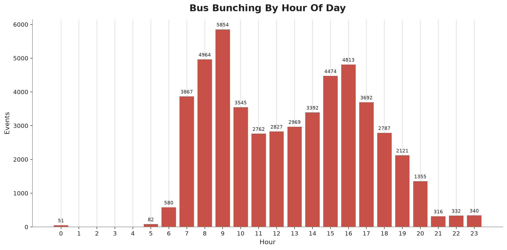
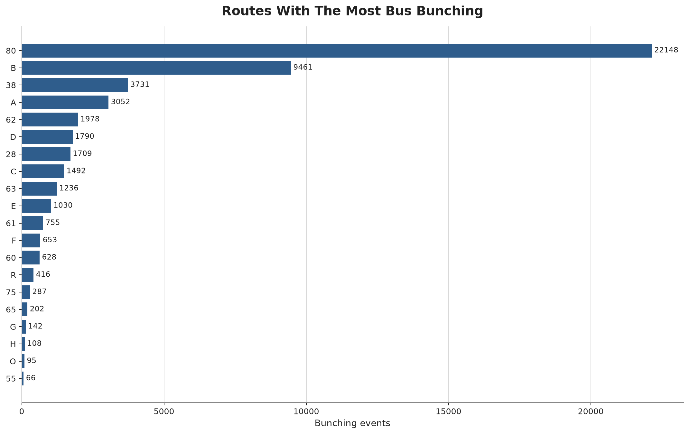
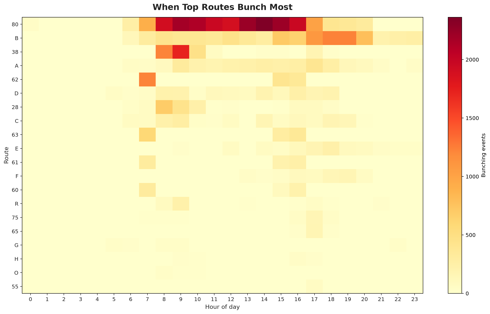
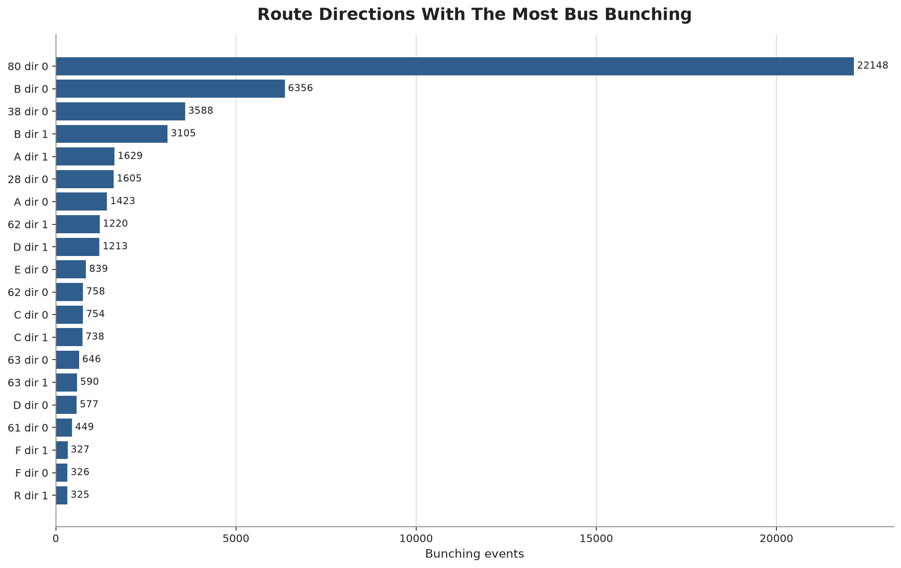
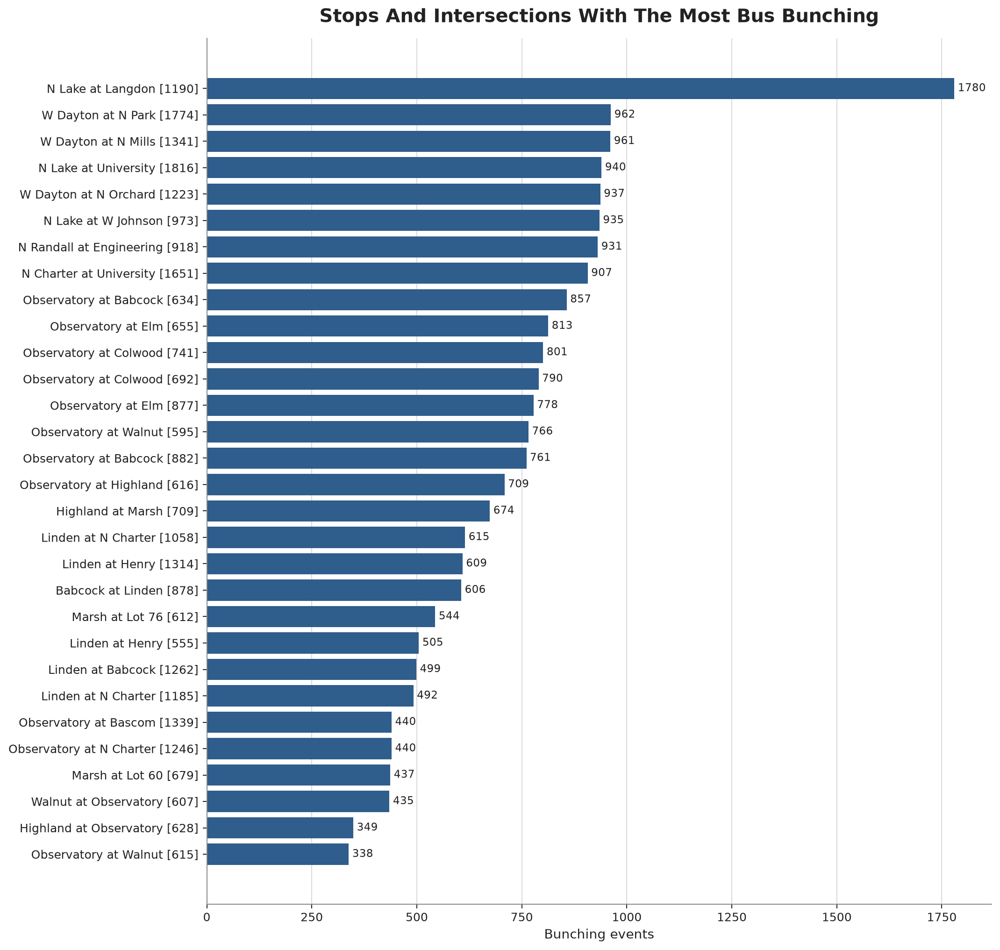

Bus bunching
Two buses on the same route and direction arrive too close together.
IP3 Partner Agency
Madison, Wisconsin. Current bus-bunching observations from the GTFS-RT export.
Where and when to watch for recurring bus bunching.
No mapped prediction locations are available for this time horizon. This does not mean there is no bunching risk.
High: red | Medium: amber | Monitor: blue. Larger markers indicate higher priority.
| Day | Route | Hour | Location | Priority | Score | Evidence |
|---|---|---|---|---|---|---|
| Mon Nov 16 | 80 | 15:00 | N Randall at Engineering [918] | Monitor | 24/100 | Recurring bus bunching |
| Mon Nov 16 | 62 | 15:00 | S Gammon at Schroeder [1927] | Monitor | 5/100 | Recurring bus bunching |
| Mon Nov 16 | B | 15:00 | Paterson [2851] | Monitor | 5/100 | Recurring bus bunching |
| Mon Nov 16 | 63 | 15:00 | S Midvale at Nakoma [1051] | Monitor | 4/100 | Recurring bus bunching |
| Mon Nov 16 | 80 | 16:00 | Observatory at Babcock [634] | Monitor | 18/100 | Recurring bus bunching |
| Mon Nov 16 | 63 | 16:00 | Verona at Highway Ramp [1054] | Monitor | 6/100 | Recurring bus bunching |
| Mon Nov 16 | B | 16:00 | S Park at Regent [1287] | Monitor | 4/100 | Recurring bus bunching |
| Mon Nov 16 | 62 | 16:00 | McKenna at Elver Park [1989] | Monitor | 3/100 | Recurring bus bunching |
| Day | Route | Hour | Location | Priority | Score | Evidence |
|---|---|---|---|---|---|---|
| Mon Nov 16 | 80 | 15:00 | N Randall at Engineering [918] | Monitor | 24/100 | Recurring bus bunching |
| Mon Nov 16 | 80 | 16:00 | Observatory at Babcock [634] | Monitor | 18/100 | Recurring bus bunching |
| Mon Nov 16 | B | 18:00 | Baldwin [2853] | Monitor | 11/100 | Recurring bus bunching |
| Mon Nov 16 | 80 | 17:00 | University Bay at Picnic Point [851] | Monitor | 10/100 | Recurring bus bunching |
| Mon Nov 16 | 63 | 16:00 | Verona at Highway Ramp [1054] | Monitor | 6/100 | Recurring bus bunching |
| Mon Nov 16 | 62 | 15:00 | S Gammon at Schroeder [1927] | Monitor | 5/100 | Recurring bus bunching |
| Mon Nov 16 | B | 15:00 | Paterson [2851] | Monitor | 5/100 | Recurring bus bunching |
| Mon Nov 16 | B | 17:00 | East Campus [2843] | Monitor | 5/100 | Recurring bus bunching |
| Day | Route | Hour | Location | Priority | Score | Evidence |
|---|---|---|---|---|---|---|
| Mon Nov 16 | 80 | 15:00 | N Randall at Engineering [918] | Monitor | 24/100 | Recurring bus bunching |
| Mon Nov 16 | 80 | 16:00 | Observatory at Babcock [634] | Monitor | 18/100 | Recurring bus bunching |
| Mon Nov 16 | B | 18:00 | Baldwin [2853] | Monitor | 11/100 | Recurring bus bunching |
| Mon Nov 16 | 80 | 17:00 | University Bay at Picnic Point [851] | Monitor | 10/100 | Recurring bus bunching |
| Mon Nov 16 | 63 | 16:00 | Verona at Highway Ramp [1054] | Monitor | 6/100 | Recurring bus bunching |
| Mon Nov 16 | 62 | 15:00 | S Gammon at Schroeder [1927] | Monitor | 5/100 | Recurring bus bunching |
| Mon Nov 16 | B | 15:00 | Paterson [2851] | Monitor | 5/100 | Recurring bus bunching |
| Mon Nov 16 | B | 17:00 | East Campus [2843] | Monitor | 5/100 | Recurring bus bunching |
| Tue Nov 17 | 80 | 14:00 | W Dayton at N Park [1774] | Monitor | 37/100 | Recurring bus bunching |
| Tue Nov 17 | 80 | 13:00 | Observatory at Elm [655] | Monitor | 32/100 | Recurring bus bunching |
| Wed Nov 18 | B | 19:00 | Paterson [2851] | High | 100/100 | Recurring bus bunching |
| Wed Nov 18 | B | 18:00 | Fish Hatchery at Emil [1011] | High | 97/100 | Recurring bus bunching |
| Thu Nov 19 | 80 | 09:00 | N Lake at Langdon [1190] | High | 87/100 | Recurring bus bunching |
| Thu Nov 19 | 80 | 11:00 | N Lake at Langdon [1190] | High | 78/100 | Recurring bus bunching |
| Fri Nov 20 | 80 | 10:00 | N Lake at Langdon [1190] | High | 86/100 | Recurring bus bunching |
| Fri Nov 20 | 80 | 14:00 | N Lake at Langdon [1190] | High | 74/100 | Recurring bus bunching |
| Sat Nov 21 | A | 09:00 | Paterson [2852] | Monitor | 30/100 | Recurring bus bunching |
| Sat Nov 21 | B | 15:00 | Knutson at Westport [2969] | Monitor | 29/100 | Recurring bus bunching |
| Sun Nov 22 | C | 19:00 | University at N Breese [1624] | Monitor | 12/100 | Recurring bus bunching |
| Sun Nov 22 | 80 | 00:00 | Observatory at Bascom [1339] | Monitor | 5/100 | Recurring bus bunching |
Based on recurring historical patterns. Priority is relative, not a probability or guarantee.
Patterns concentrate by route, hour, and repeated stop locations.
Top route: 80. Busiest hour: 09:00.
These charts summarize the current Madison Metro Transit event export. Each row is a stop-level observation where two adjacent buses on the same route and direction were predicted to arrive closer together than the scheduled-headway threshold.
The current file covers 2026-09-09 to 2026-10-29 and contains 51,123 stop-level observations across 25 routes and 928 stops.
Counts are stop-level observations. A close bus pair can be counted at multiple downstream stops if it remains bunched along the route.
Shows how observations vary by service date in the current export. Spikes are useful review dates, not proof of a one-time external cause. Wednesday, Sep. 2 was the first day of UW-Madison classes; use that date as a before-and-after marker for campus travel patterns. The current event export starts after Sep. 2.

Shows when observations concentrate during the service day. Use the tallest bars to target schedule review, dispatch monitoring, or field follow-up.

Ranks routes by stop-level observations. Higher counts indicate where bus-bunching prediction should focus first in the current export.

Rows are routes and columns are hours of day. Hotter cells show route and hour combinations with more repeated stop-level observations.

Splits route totals by GTFS direction_id, which helps separate inbound and outbound patterns when the same route has different operating conditions by direction.
| Date | Hour | Routes | Observations |
|---|---|---|---|
| 2026-10-28 | 18:00 | 8 | 1,174 |
| 2026-10-28 | 19:00 | 5 | 1,160 |
| 2026-10-28 | 17:00 | 9 | 1,118 |
| 2026-10-28 | 16:00 | 12 | 988 |
| 2026-09-10 | 09:00 | 11 | 833 |
| 2026-09-09 | 09:00 | 9 | 792 |
| 2026-09-09 | 08:00 | 9 | 772 |
| 2026-09-15 | 09:00 | 8 | 763 |
| 2026-10-28 | 20:00 | 6 | 724 |
| 2026-10-28 | 15:00 | 10 | 714 |
Review observed bunching locations together with the GTFS route alignments.
Open route overlay mapOpen the interactive map to view stop locations and observation counts.
Open full interactive map
Ranks stops and intersections by repeated observations. These are useful candidates for field review, stop-area operations checks, or schedule timing review.
| Route | Observations | Top stop | At stop | Top hour | At hour |
|---|---|---|---|---|---|
| 80 | 22,148 | N Lake at Langdon | 1,780 | 14:00 | 2,361 |
| B | 9,461 | Knutson at Westport | 303 | 18:00 | 1,232 |
| 38 | 3,731 | Observatory at Colwood | 186 | 09:00 | 1,720 |
| A | 3,052 | High Point | 133 | 17:00 | 388 |
| 62 | 1,978 | S Gammon at Schroeder | 230 | 07:00 | 1,220 |
| D | 1,790 | W Johnson at N Frances | 78 | 16:00 | 247 |
| 28 | 1,709 | Observatory at Colwood | 83 | 08:00 | 690 |
| C | 1,492 | University at N Breese | 33 | 09:00 | 276 |
| Stop | Stop ID | Routes affected | Observations |
|---|---|---|---|
| N Lake at Langdon | 1190 | 1 | 1,780 |
| W Dayton at N Park | 1774 | 1 | 962 |
| W Dayton at N Mills | 1341 | 2 | 961 |
| N Lake at University | 1816 | 1 | 940 |
| W Dayton at N Orchard | 1223 | 1 | 937 |
| N Lake at W Johnson | 973 | 1 | 935 |
| N Randall at Engineering | 918 | 3 | 931 |
| N Charter at University | 1651 | 4 | 907 |
| Observatory at Babcock | 634 | 4 | 857 |
| Observatory at Elm | 655 | 4 | 813 |
Two buses on the same route and direction arrive too close together.
A detected bunching case at one stop and snapshot. One close bus pair may produce multiple stop-level observations as it travels along the route.
How close the buses were compared with the bunching threshold. Higher severity means the buses were closer together.
Repeat patterns by route, stop, day, or hour.
Spikes linked to incidents, detours, or other unusual operating conditions.
Weather is context for interpretation, not a causal finding.
No forecast rows available.